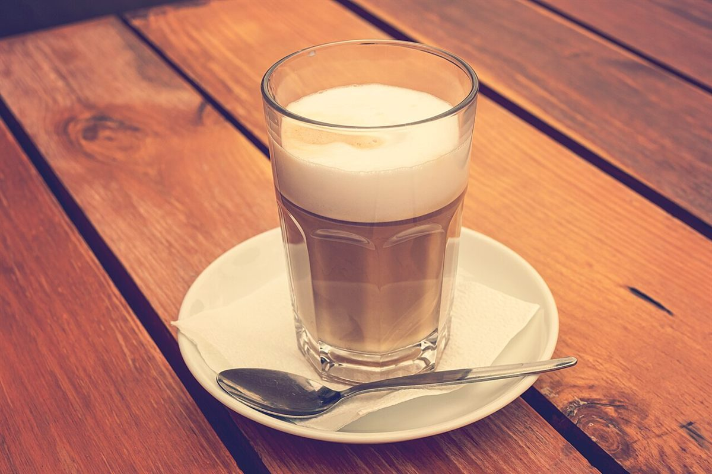
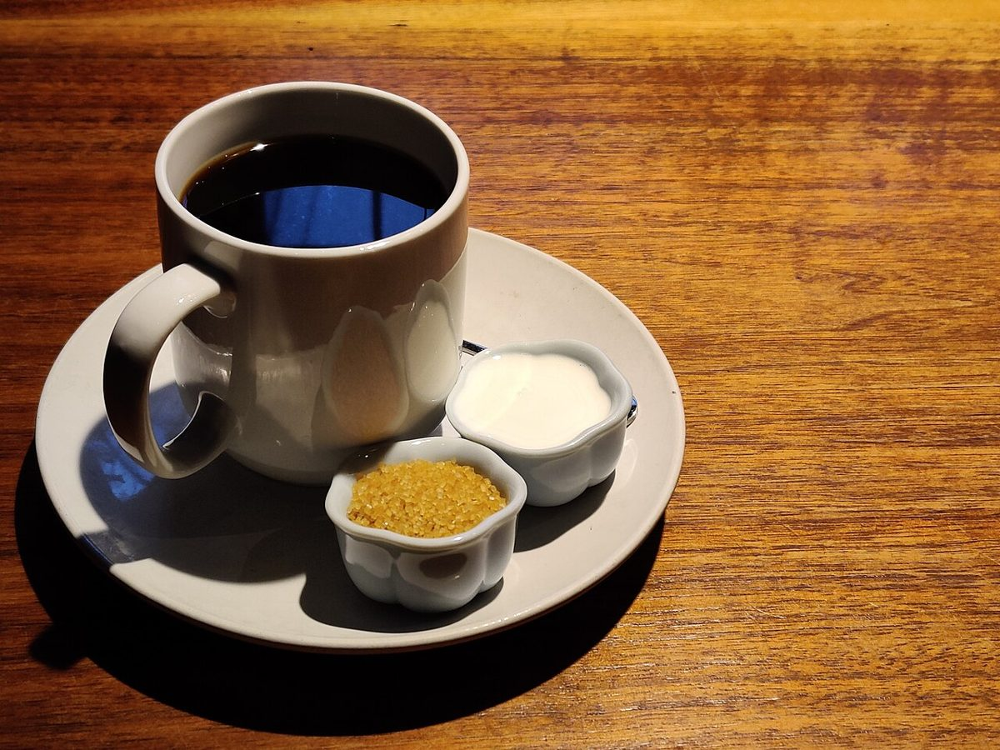

Q.01

Black is ひとくち目の静けさ.
制作側の答え(例)
カフェ / 大分県佐伯市
cafe is .
大分県佐伯市のカフェ「cafe is」のご案内ページです。営業時間やメニューなどの詳しいことは準備中。まずはInstagramをのぞいてみてください。
空欄に、言葉をひとつ。

制作側の連想
店名の由来や意味は分かりません。制作側は「is」という短い語から、英語の「A is B.」という一文を連想しました。このサイトは、その空欄を埋めていく問題集のつくりにしています。答えはすべて制作側の言葉遊びで、お店の理念・由来とは無関係です。
問題集
写真は国外・撮影地不明のフリー素材のイメージです。
Black is ひとくち目の静けさ.
制作側の答え(例)

A cup is 両手のための小さな円.
制作側の答え(例)

Milk is 層になっていく時間.
制作側の答え(例)

Sugar is ちいさな寄り道.
制作側の答え(例)

Tea is 冷めるのを待つこと.
制作側の答え(例)

Two cups is はなしのはじまり.
制作側の答え(例)
ご案内
| 所在地 | 〒876-0202 大分県佐伯市本匠大字笠掛1583-1 |
|---|---|
| 電話 | なし |
| 営業時間 | 準備中 |
| 定休日 | 準備中 |
| ご予約 | 準備中 |
| 駐車場 | 準備中 |
| SNS | Instagram @cafe.bus.is |